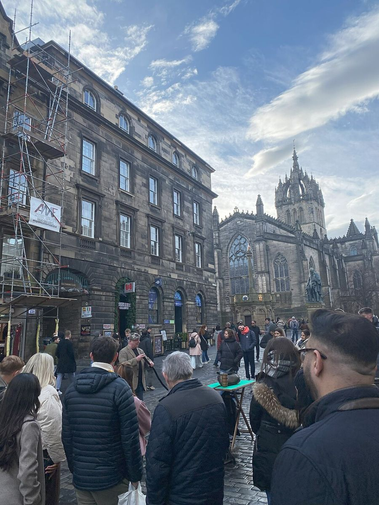
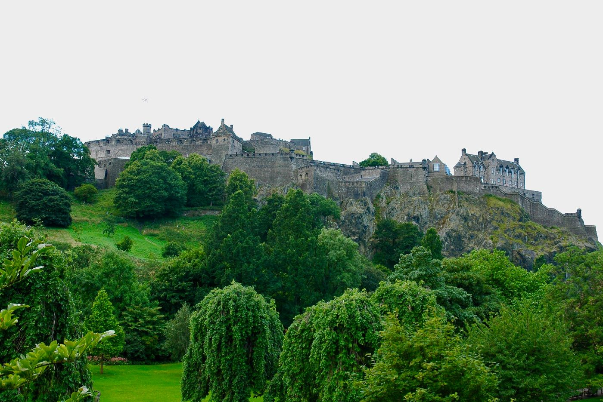
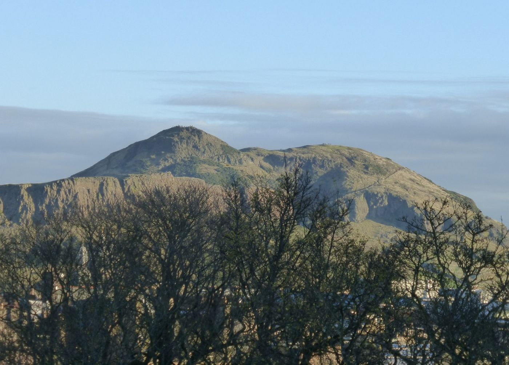
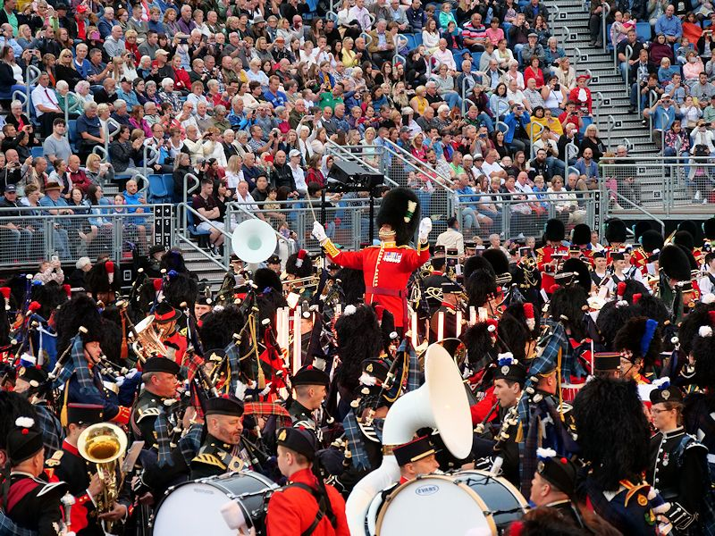

11Wed · Aug
Arrive
- AllFly Vienna or Bratislava → Edinburgh (about 2h50). Tram or taxi to the flat.
- AllEvening walk on the Royal Mile with the Fringe street performers.

Two families · Slovakia & Austria → Scotland
Five nights of festival Edinburgh, then the train into the Highlands and five nights in a lodge beside Blair Castle. Castles, gorges and waterfalls for the families, two days on the hill for the hunters, and no car at all.
The route
One direct train on Monday 16 August, about 2 hours 10 minutes up the Highland Main Line, and the same train back on Saturday 21 August. In Atholl we walk, take the local bus 87, or hop one stop on the train to Pitlochry.

Why the train
Edinburgh Waverley to Blair Atholl is direct: no change. ScotRail lists up to 6 trains a day (Monday timetable), about 2h08, advance fares from £15.20 one way. We travel on a Monday and a Saturday, so the full weekday timetable applies; we pick our trains when tickets open, about 12 weeks before.
The lodge is close to the village and station. Groceries come to the door: the lodge lists delivery from Tesco, Morrisons and ASDA. A Family & Friends Railcard cuts adult fares by a third and children's by 60%.
Day by day

Chapter 1 · Wed 11 – Mon 16 Aug
The Fringe (6–30 Aug) and the Tattoo (6–28 Aug) are on, so the whole city is a stage. Trams, buses and walking.

Castle: £23.50 adult, £11.50 child (7–15), 2026 online prices.

Tattoo 2026 adult prices £42–£119; child prices not published.



Chapter 2 · Mon 16 – Sat 21 Aug
Base: Old Blair Lodge on the Atholl Estates, a few hundred yards from Blair Castle, with free entry to the castle and gardens. The two hunters go out together with the estate stalker on two days, aiming for one stag each; the families have the castle, the glens and the bus to Killiecrankie and Bruar.


Spare stalking day if weather cancels Tuesday or Wednesday.


For the two hunters · Atholl Estates
Offer from Andrew Bruce Wootton, CEO of Atholl Estates (26 Oct 2026): guided stag stalking, no previous experience needed, estate rifle free of charge. Stags only: there are few roe on their ground.

The plan · Tue 17 + Wed 18 Aug
Marián is a beginner without a licence; Atholl confirmed no experience is needed. Fitness to walk up to 10 miles a day is essential.
What it costs, both hunters, incl. VAT
Where we stay
Blair Atholl · Mon 16 – Sat 21 Aug
≈ £2,715 ≈ €3,240 / 5 nights, estimate
Edinburgh · Wed 11 – Mon 16 Aug, 5 nights · still to book
Sleeps 8 · 4 bedrooms, 4 bathrooms · 15 min walk to Waverley station, where the Highland train leaves.
Check dates and price ↗Sleeps 8 (+2) · 4 bedrooms · ground floor, Southside near the Old Town.
Check dates and price ↗Without a car, a central flat near Waverley works best. Prices only show once dates are entered. Budget: up to about €480 a night. Festival-week flats go early, so book this first.
While the hunters are out
All reachable from the lodge on foot, by bus 87 or by train. Bus 87 (Elizabeth Yule) runs Pitlochry – Killiecrankie – Blair Atholl – House of Bruar, Monday to Saturday.

Normally £65 for a family of 2 + 3 online. Rooms, walled Hercules Garden, Diana's Grove of tall trees.
Woodland paths along the River Garry and the Soldier's Leap.
Hands-on hydro and fish displays; putting green and playground nearby.
Waterfalls in a rocky gorge, starting behind the House of Bruar shops and café.

Blair Castle Trekking Centre (tel. 01796 481568, ask about ages), family bike hire, watermill tearoom.

The best-known view in Highland Perthshire, with a café at the top.
What it costs · £1 = €1.194
Stalking is from Atholl's 2027 prices, at the most it can cost for one stag each. The rest are estimates until we book. No car hire needed.
| Item | EUR | |
|---|---|---|
| Flights, 8 return, Vienna or Bratislava | Estimate | 2,150 |
| Edinburgh flat, 5 nights | Estimate | 2,390 |
| Trams, buses and taxis in Edinburgh, incl. airport | Estimate | 280 |
| Train Edinburgh ⇄ Blair Atholl, 8 people | Estimate | 300 |
| Bus 87, train to Pitlochry, taxis in Atholl | Estimate | 140 |
| Old Blair Lodge, 5 nights (pro rata of £3,800/week) | Estimate | 3,240 |
| Activities (Edinburgh Castle, Britannia, ponies, bikes) | Estimate | 500 |
| Food, mostly cooking ourselves | Estimate | 1,530 |
| Stalking, 2 hunters together × 2 days, one stag each, incl. VAT (maximum) | Quoted | 3,810 |
| Tips for the stalkers | Estimate | 120 |
| Total | ≈ 14,460 |
Not included: Tattoo tickets (optional, 8 × £42–£119), a second stag for either hunter (£1,140 incl. VAT, ≈ €1,360), travel insurance. If Atholl only lets by the week, the lodge costs €1,300 more.
Get in the mood
Each card opens YouTube in a new tab.
Next steps